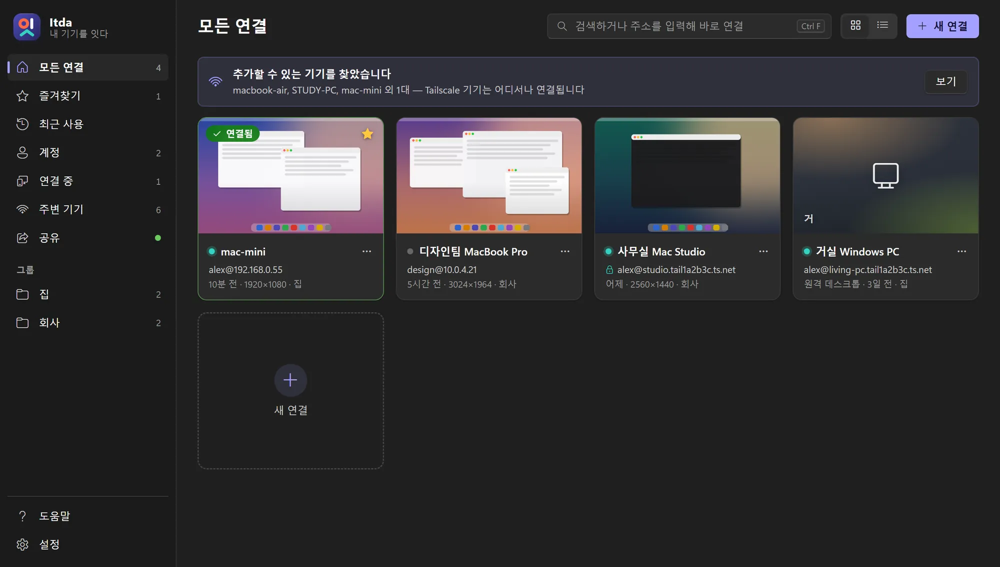
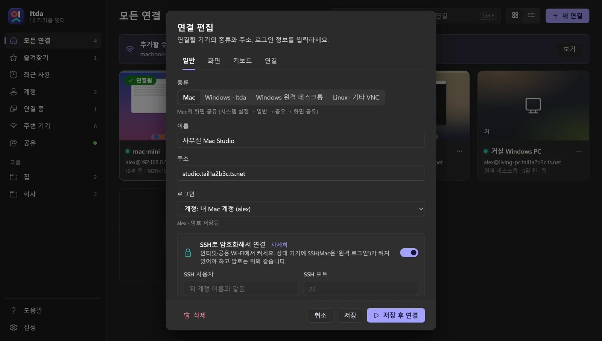
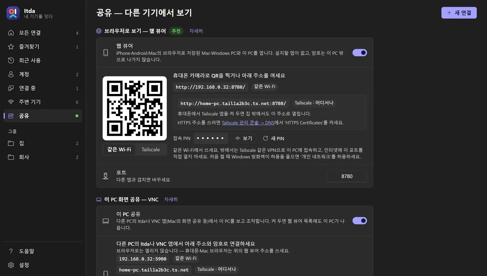
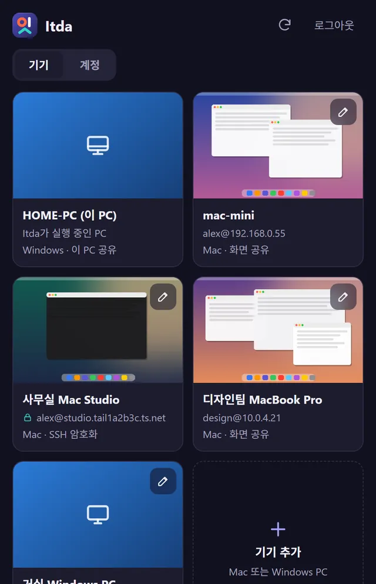
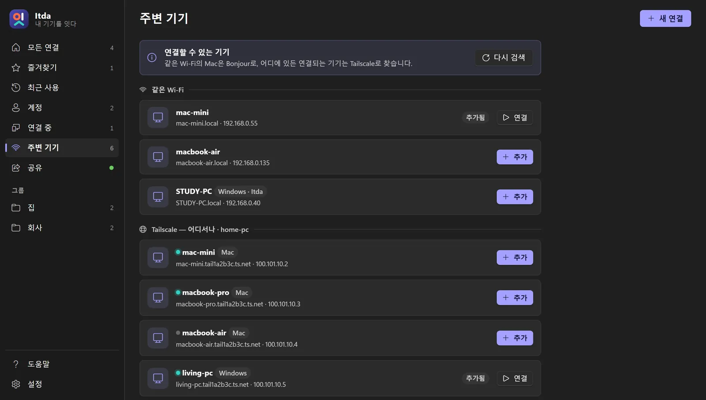

5분이면 연결됩니다Connected in five minutes
다운로드하고, 상대 기기에서 공유를 켜고, Itda에 추가하면 끝입니다. 무엇을 연결하고 싶은지 고르세요.Download, turn on sharing on the other device, add it to Itda. Pick what you want to connect.
다운로드하고 실행하기Download and run
- 최신 릴리스에서 Windows용
itda.exe를 받습니다. 설치 과정 없이 실행 파일 하나입니다.Grab the Windowsitda.exefrom the latest release. There's no installer — it's a single executable. - 원하는 폴더(예:
문서\Itda)에 두고 더블클릭합니다.Put it somewhere permanent (e.g.Documents\Itda) and double-click it. - 알림 영역에 Itda 아이콘이 생깁니다. 창을 닫아도 거기서 계속 실행되며 다시 열 수 있습니다.An Itda icon appears in the notification area. Closing the window keeps it running there.
첫 화면 둘러보기A first look
왼쪽에는 모든 연결 · 즐겨찾기 · 계정 · 주변 기기 · 공유가, 가운데에는 저장한 기기가 카드로 보입니다. 위쪽 검색칸에 주소를 바로 입력해 연결할 수도 있습니다.The sidebar has All · Favourites · Accounts · Nearby · Share; your saved devices appear as cards. You can also type an address straight into the search box.

초록 점은 지금 연결할 수 있다는 뜻입니다. Ctrl + / −로 화면 크기를 바꿀 수 있습니다.A green dot means the device is reachable right now. Use Ctrl + / − to zoom the app.
Mac 연결하기Connect a Mac
Mac에는 아무것도 설치하지 않습니다. 기본 화면 공유를 켜기만 하면 됩니다.Nothing to install on the Mac — just turn on its built-in Screen Sharing.
- Mac에서 시스템 설정일반공유 로 가서 화면 공유를 켭니다. 원격 관리는 꺼 두세요(둘 다 켜면 화면 공유가 동작하지 않습니다).On the Mac open System SettingsGeneralSharing and turn on Screen Sharing. Leave Remote Management off (they conflict).
- 화면 공유 옆 ⓘ에서 접근 허용에 내 계정이 있는지 확인합니다.Click ⓘ next to Screen Sharing and check your account is in Allow access for.
- Itda의 주변 기기에서 Mac 옆 추가를 누르고, Mac 계정 이름(짧은 이름)과 로그인 암호를 넣은 뒤 저장 후 연결. Apple ID가 아닙니다.In Itda's Nearby, click Add next to the Mac, enter the Mac account short name and login password, then Save & connect. Not your Apple ID.

계정 이름이 헷갈리면 Mac 터미널에서 whoami. 여러 Mac에 같은 계정을 쓰면 계정을 만들어 고르기만 하세요.Unsure of the short name? Run whoami in Terminal. Same account on several Macs? Create an Account once and pick it.
Windows PC 연결하기Connect a Windows PC
A. Itda 공유A. Itda sharing 모든 WindowsAny Windows
- 그 PC에도 Itda를 실행하고 공유 → 이 PC 공유를 켭니다. 주소와 8자리 공유 암호가 나옵니다.Run Itda on that PC and turn on Share → Share this PC. You'll see its address and an 8-character share password.
- 방화벽이 물으면 개인 네트워크만 허용합니다.If the firewall asks, allow Private networks only.
- 내 Itda의 주변 기기에 Windows · Itda로 나타납니다. 추가 → 종류 Windows · Itda → 공유 암호만 입력.It shows up in Nearby as Windows · Itda. Add it, kind Windows · Itda, enter the share password.
- 연결하면 그 PC 화면에 허락 창이 뜹니다. 예를 누르면 연결됩니다.The other PC shows an allow prompt — click Yes.
B. 원격 데스크톱B. Remote Desktop Pro · Enterprise
- 그 PC에서 설정시스템원격 데스크톱을 켭니다.On that PC turn on SettingsSystemRemote Desktop.
- Itda에서 종류 Windows 원격 데스크톱, 주소에 PC 이름이나 IP, 계정에 그 PC의 Windows 계정(Microsoft 계정이면 이메일).In Itda pick Windows Remote Desktop, enter the PC name or IP and its Windows account (email for a Microsoft account).
- 이 PC에서는 Windows 원격 데스크톱 앱으로, 웹 뷰어에서는 브라우저로 열립니다.It opens in Windows' Remote Desktop app here, and right in the browser from the web viewer.
Linux · 기타 VNCLinux & other VNC servers
x11vnc, TigerVNC, wayvnc, Raspberry Pi의 VNC 서버 등 표준 VNC 서버라면 연결됩니다. 연결 편집의 종류를 Linux · 기타 VNC로 고르고 VNC 암호를 넣으세요. 대부분 사용자 이름은 비워 둡니다.Any standard VNC server works — x11vnc, TigerVNC, wayvnc, Raspberry Pi's VNC. Choose Linux · other VNC as the kind and enter the VNC password; most servers need no user name.
포트가 5900이 아니면 주소 뒤에 붙입니다 (예: raspberrypi.local:5901). SSH가 켜진 기기라면 SSH 암호화도 쓸 수 있습니다.Add the port if it isn't 5900 (e.g. raspberrypi.local:5901). If the box runs SSH you can encrypt the connection too.
휴대폰·Mac 브라우저로 보기View from a phone or Mac browser
Mac·iPhone·Android용 앱 대신 웹 뷰어를 씁니다. Windows PC의 Itda가 작은 웹 서버가 되어, 저장된 모든 기기와 이 PC 자신을 브라우저로 보여 줍니다.Instead of Mac, iPhone and Android apps there's the web viewer: the Itda on your Windows PC serves every saved device — and the PC itself — to any browser.
- PC의 Itda 왼쪽 공유 → 모두 켜기. QR 코드와 6자리 접속 PIN이 나옵니다.In Itda on the PC, open Share → Turn on both. You get a QR code and a 6-digit PIN.
- 휴대폰 카메라로 QR을 찍거나 Mac 브라우저에 주소를 입력하고 PIN을 넣습니다.Scan the QR with your phone's camera (or type the address on a Mac) and enter the PIN.
- 기기를 눌러 엽니다. 기기 추가·편집·계정 관리도 여기서 됩니다.Tap a device to open it. You can add and edit devices and accounts here too.

앱처럼 설치하기Install it like an app
- iPhone·iPad — Safari 공유 버튼 → 홈 화면에 추가iPhone · iPad — Safari's Share button → Add to Home Screen
- Mac — Safari 파일Dock에 추가, Chrome·Edge는 앱으로 설치Mac — Safari FileAdd to Dock, or Install app in Chrome/Edge
- Android — Chrome의 앱으로 설치Android — Install app in Chrome
Chrome·Edge·Android의 설치는 https:// 주소에서만 됩니다 — 아래 Tailscale HTTPS 주소를 쓰세요.Chrome, Edge and Android only install from an https:// address — use the Tailscale HTTPS address below.

집 밖에서도 — TailscaleFrom anywhere — Tailscale
가장 쉽고 안전한 방법은 Tailscale입니다. 공유기 설정 없이, 기기들이 어디에 있든 같은 네트워크처럼 연결됩니다(개인 무료).The easiest safe option is Tailscale: no router setup, and your devices behave as if they were on one network wherever they are (free for personal use).
- 이 PC, Mac·PC, 휴대폰에 Tailscale을 설치하고 같은 계정으로 로그인합니다.Install Tailscale on this PC, your Macs/PCs and your phone and sign in with the same account.
- Itda 주변 기기의 Tailscale — 어디서나에서 기기를 추가합니다.Add devices from Tailscale — anywhere in Itda's Nearby.
- 웹 뷰어의 QR을 Tailscale로 바꾸면 밖에서 쓸 주소가 나옵니다. Tailscale 관리 콘솔 → DNS에서 HTTPS Certificates를 켜면 HTTPS 주소 만들기도 됩니다.Switch the web viewer's QR to Tailscale for the away-from-home address. Turn on HTTPS Certificates under DNS in the Tailscale admin console to get an HTTPS address.

문제 해결Troubleshooting
“Mac이 연결을 거부했습니다”“The Mac refused the connection”
화면 공유가 꺼져 있거나 원격 관리와 함께 켜져 있습니다. 화면 공유만 켜 두세요.Screen Sharing is off, or Remote Management is on as well. Keep only Screen Sharing on.
“로그인하지 못했습니다”“Couldn't sign in”
Mac은 계정의 짧은 이름과 로그인 암호(Apple ID 아님), Itda 공유 PC는 공유 암호, Linux는 VNC 암호입니다. 여러 번 틀리면 Mac이 잠시 막으니 1분 뒤 다시 하세요.Macs want the account short name and login password (not Apple ID); Itda PCs want the share password; Linux wants the VNC password. Macs block repeated failures for a minute.
휴대폰에서 웹 뷰어가 안 열려요The web viewer won't open on my phone
공유 페이지에서 웹 뷰어가 켜져 있는지 보세요(이 PC 공유의 5900 포트는 브라우저로 열리지 않습니다). 휴대폰이 같은 Wi-Fi이거나 Tailscale이 켜져 있어야 하고, 방화벽에서 ‘개인 네트워크’를 허용해야 합니다.Check the web viewer is on in Share (Share this PC's port 5900 is for VNC apps, not browsers). The phone must be on the same Wi-Fi or Tailscale, and the firewall must allow Private networks.
그래도 안 되면Still stuck?
Itda 설정 → 정보 → 로그의 마지막 줄을 붙여 GitHub 이슈로 알려 주세요.Open Settings → About → Log in Itda and paste the last lines into a GitHub issue.
다 됐습니다 🎉You're all set 🎉
이제 어떤 기기에서든 내 기기를 열 수 있습니다. 앱 안의 도움말에도 같은 안내가 그림과 함께 있습니다.You can now reach your devices from anywhere. The in-app Help has the same guide with pictures.